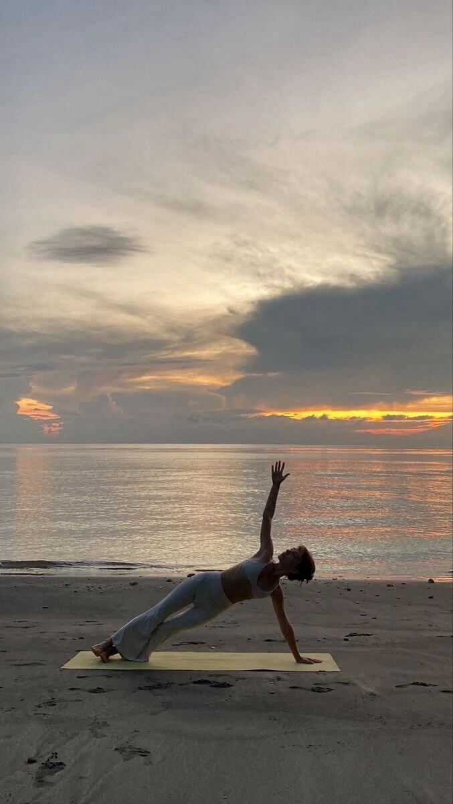

Simple Lifestyle Tweaks for IBS Relief
When you live with IBS, small daily changes can create a big shift in how your gut feels. Along with food and mindfulness, your lifestyle habits—like sleep, stress, and movement—play a key role in digestive comfort.
☀️ Start Your Day Gently
- Wake up slowly, avoid rushing.
- Drink warm water with lemon or ginger to gently wake up your gut.
- Take a few minutes to breathe, stretch, or step outside for fresh air.
🕒 Build a Routine
Your digestive system thrives on consistency.
- Try to eat, sleep, and move at similar times daily.
- Avoid skipping meals or eating too late at night.
- Limit screen time before bed for better sleep quality.
💪 Gentle Movement Helps
Intense workouts may trigger symptoms in some, but light activities like:
- Walking after meals (aids digestion)
- Yoga or stretching (relaxes the gut)
- Dancing or swimming (lifts mood without pressure)
🔋 Reduce Gut-Stressing Habits
- Too much caffeine or energy drinks
- Sleeping too little or at inconsistent hours
- Holding in gas or bowel movements
- Overloading your to-do list—rest is productive too
🌼 Final Word
Changing your lifestyle doesn’t mean flipping everything at once. Start with one or two habits that feel good—and build from there. Small, loving choices can lead to lasting IBS relief.